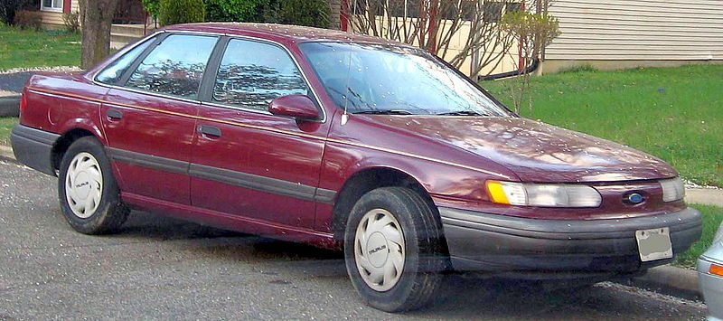

Lab 5 - Data Types and Variables
Challenge
The challenge of this lab was to create Javascript variables in a browser, create a Javascript program, and to add said Javascript into an HTML file.
Problems
I didn't experience any problems, I just needed to get used to the formatting.
Reflection
This lab was fairly easy to complete. I followed the directions on Canvas and felt confident working on it. My partner made me feel as ease and I actually really enjoyed working on this lab.
Results
My results are below, showing my Javascript variables/output.
Script Output
